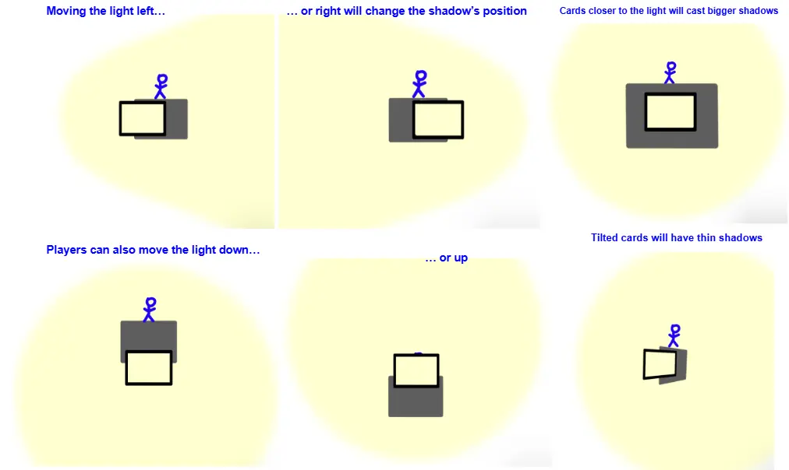
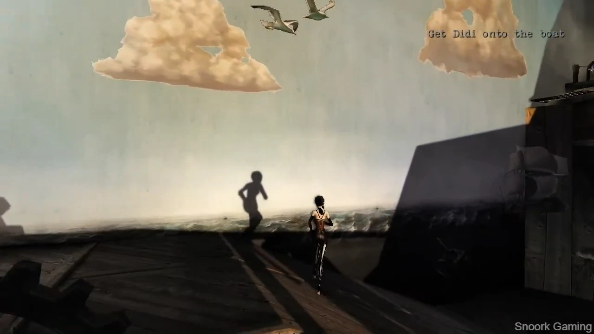
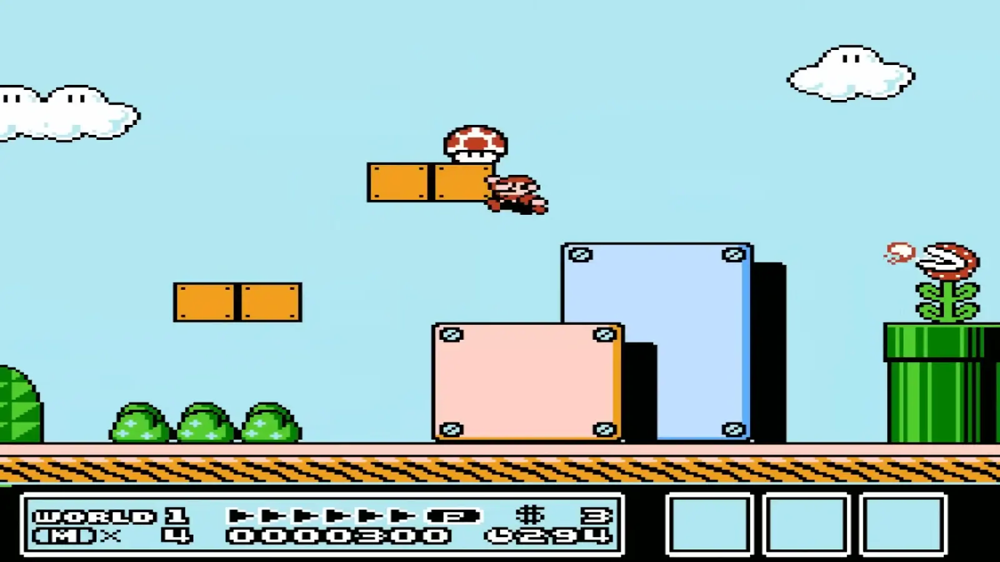
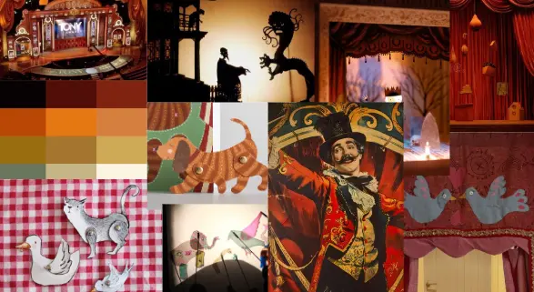
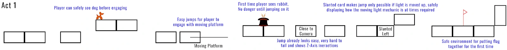
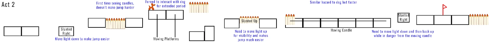
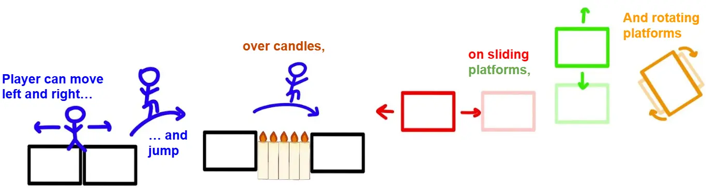

Ursa Magus
Turn-based stealth puzzle prototype.
Unity
C#
Role:
Designer, Developer
Team Size:
5 people
Duration:
4 weeks
Play as two characters, a Witch and her Bear familiar, to navigate environments while avoiding enemies. Use the Witch's spells to manipulate the environment and the Bear's strength to incapacitate enemies and push obstacles. Work together to reach the exit!
Responsibilities
Designer
- Designed 8 of the game's 11 levels, each a puzzle introducing a specific mechanic.
- Conceived and designed the game's items and abilities, including the Cosmic Shroud (invisibility for one turn) and Honey Jar (two movements in one turn).
Developer
- Programmed the Honey and Cosmic Shroud functionality.
- Built and hooked up UI screens, including the pause menu, level select screen, and lose screen.
- Resolved UI issues across development, such as inventory stretching, button hierarchy, and inconsistencies in phases.
- Integrated updated sprites and refactored code to include directional logic.
- Updated cloud sprite placement logic.
- Updated and debugged the Bear's action turn flow.
- Implemented the enemy hover interaction to display sightlines.
Process
Ursa Magus was built in Unity 6 over a period of four weeks. Each level functions as a self-contained puzzle, introducing mechanics incrementally. Abilities and items each have a dedicated tutorial level to introduce players to the different mechanics.


We also asked players for their insights on future character ability design, and found that they aligned with the team's plans. This indicated to us that the theming and styling of the game matched player expectations.




I redesigned levels based on this feedback. As a team, we decided on the order in which we wanted to introduce abilities and spells. I then reworked the levels so that players were forced to use a given ability or item to beat a level. This often meant blocking the enemy from the Bear's reach, or trapping the player with the enemy.




